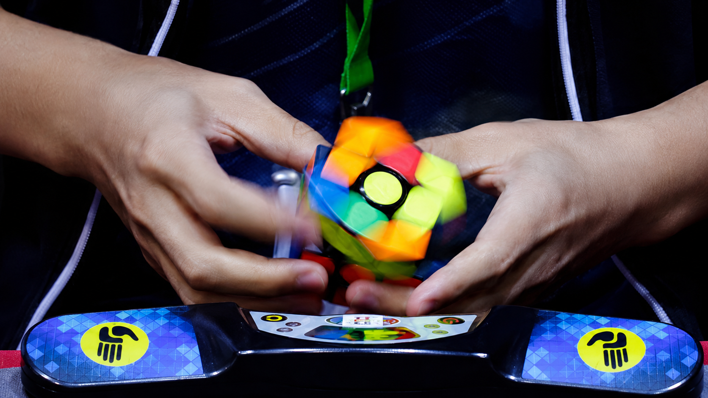

Aprenda métodos, acompanhe seus tempos e evolua como um verdadeiro Speedcuber!
Aqui onde você pode encontrar informações e ferramentas para realmente estar imerso neste mundo,
Seja também um SpeedCuber!

Todo profissional de verdade precisa (a todo
momento) medir o seu potencial, para ter sempre noção de suas piores solves, medias
e também seus records
Como um atleta poderia evoluir, sem analizar seus tempos? Por isso temos também uma lista onde você poderá consultar todas as suas solves cronometradas, podendo analisar seus tempos e evoluir cada vez mais!
Organize suas solves por cubo cada cubo seu (3x3, 4x4 5x5 e outros) e acompanhe sua evolução em cada um deles.
Aqui onde você pode encontrar informações e ferramentas para realmente estar imerso neste mundo,
Seja também um SpeedCuber!
Durante a pandemia, ninguem tinha nada para fazer não é mesmo? então busquei um novo hobby. Foi então que em um simples mercadinho no interior do Piauí, achei um cubo mágico que despertou minha curiosidade. O que começou como só um pequeno interesse rapidamente se tornou um desafio — e hoje quero compartilhar esse universo com outras pessoas.